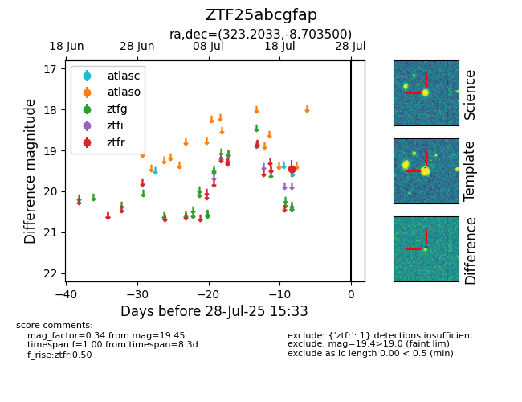

Target ZTF25abcgfap at 2025-08-05 23:02, see:
FINK: fink-portal.org/ZTF25abcgfap
Lasair: lasair-ztf.lsst.ac.uk/objects/ZTF25abcgfap
ALeRCE: alerce.online/object/ZTF25abcgfap
alt names
ZTF25abcgfap (ztf,fink)
coordinates:
equatorial (ra, dec) = (323.2033,-8.70350)
galactic (l, b) = (44.7119,-39.68153)
photometry
last ztfr=19.45
1 ztfr detections
